This page accompanies a survey of diffusion and flow models. Each tutorial follows one section of Chapter 2 or one of Chapters 3 to 7. A step states a result, shows it in a plot you can change and derives it one line at a time, with a hint for every line that names the rule it uses.
The targets in the plots are Gaussian mixtures. For a mixture the density, the score and the velocity field are available in closed form at every noise level, so the plots show exact quantities and not the output of a trained network. Where a tutorial trains a small model in the page, it says so. The survey also has seventeen animations that follow one model from pretraining to inference-time search.
Notation. Time runs from noise to data. At \(t=0\) the state is noise and at \(t=1\) it is data, with \(x_t=\alpha_t x_1+\sigma_t x_0\), \(x_0\sim\mathcal N(0,I)\) and \(x_1\) drawn from the data. Score-based diffusion and many image codebases use the opposite direction.
From data to guidance
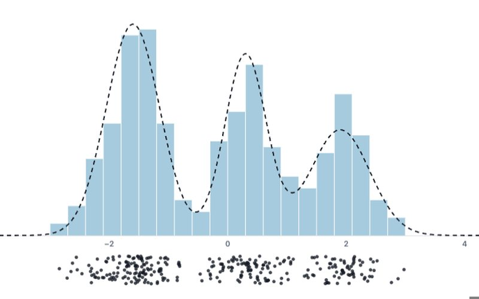
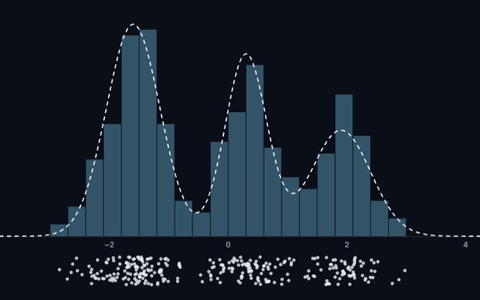
Data and distributions
A primer for the chapter. It shows how an image, a molecule, a protein and a sentence become vectors, and how a set of samples is described by a density. It fits a Gaussian by maximum likelihood, shows that this is the same as minimizing a KL divergence, and ends with a mixture fitted by EM.
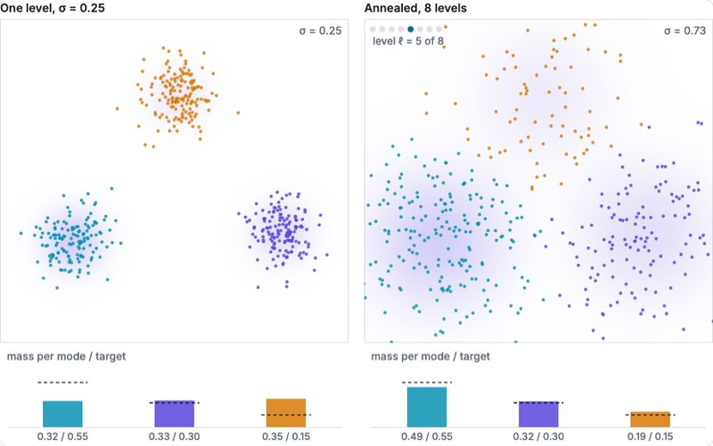
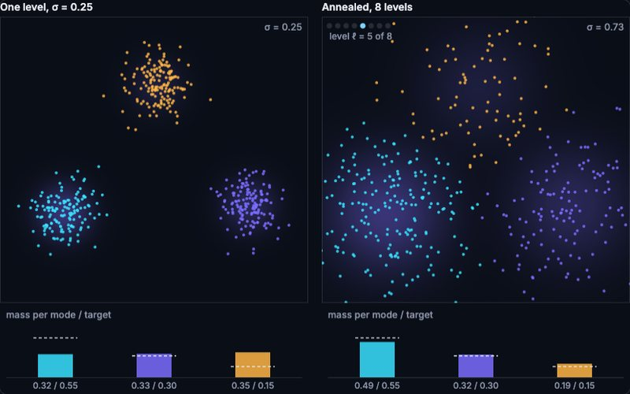
Energies, scores and Langevin dynamics
An energy defines a density, and its score does not depend on the normalizing constant. Langevin dynamics samples with the score alone. The last steps show why one noise level is not enough and how annealing the noise recovers the right mass per mode.
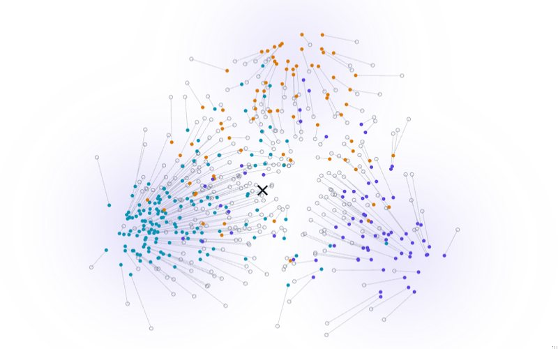
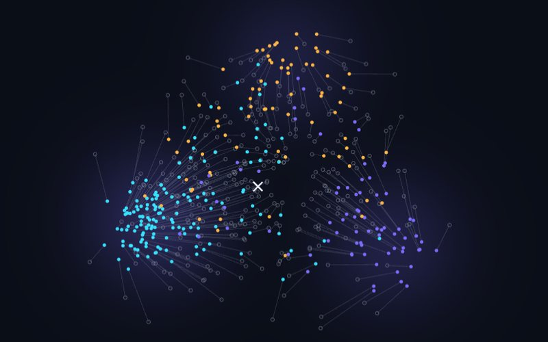
Learning the score: from Hyvärinen to Tweedie
How a model learns the score from samples when the density is unknown. The tutorial goes from explicit and implicit score matching to denoising score matching, shows that the marginal score is an average of conditional scores, and ends with Tweedie’s formula and the four prediction targets.
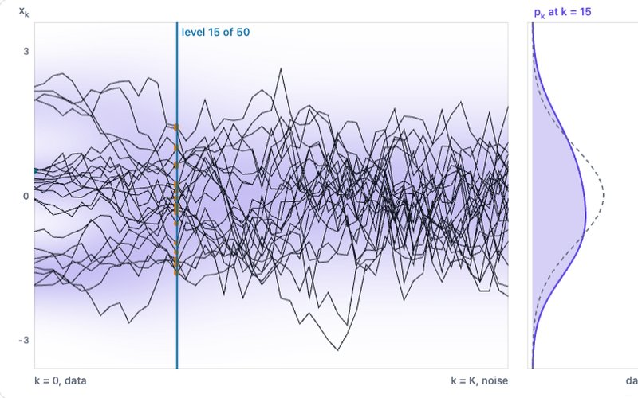
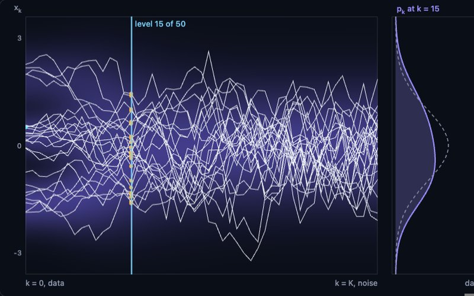
DDPM: a chain of small Gaussian steps
Diffusion as Ho et al. (2020) introduced it: a fixed noising chain, Gaussian reverse steps and a variational bound. The tutorial shows that the noise predictor is a rescaled score, compares ancestral sampling with DDIM, and maps DDPM levels to the time of flow matching.
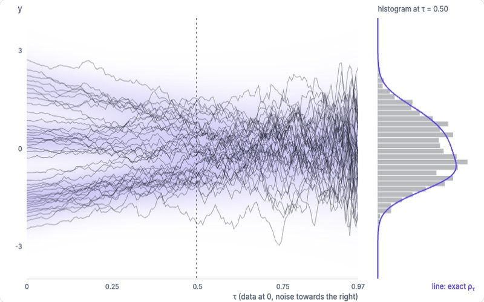
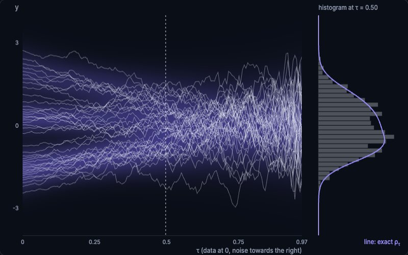
Diffusion as an SDE
Letting the number of noise levels go to infinity turns the corruption into a stochastic differential equation. The tutorial derives the Fokker–Planck equation, the reverse-time SDE and the probability-flow ODE, and writes both samplers in the survey’s interpolation convention.
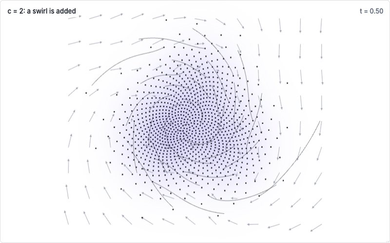
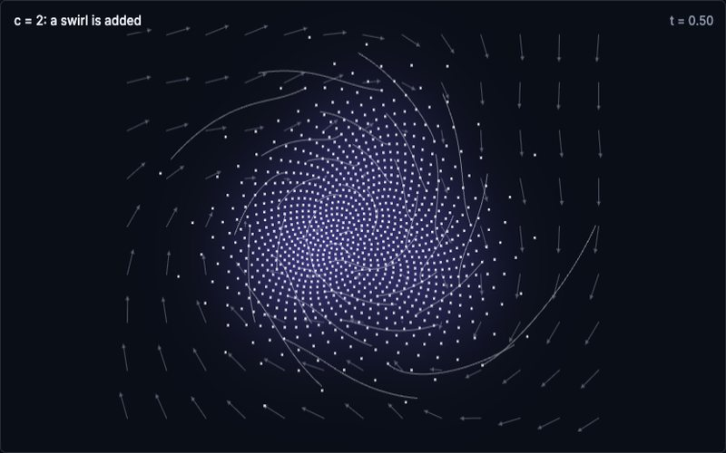
Flows: the continuity equation and flow matching
From the continuity equation to the flow-matching loss, trained live in the page. The velocity and the score turn out to be the same field, one trained velocity supports a whole family of samplers, and straighter paths need fewer steps.
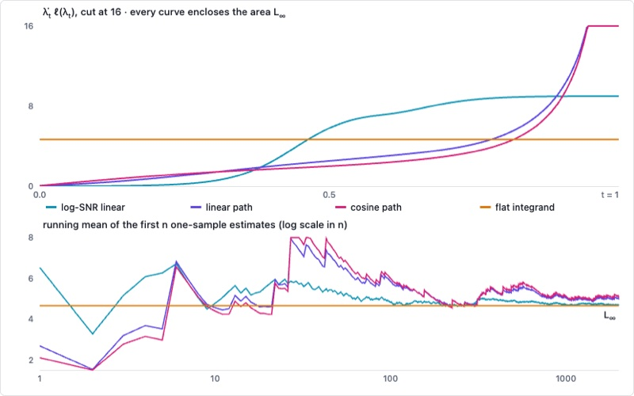
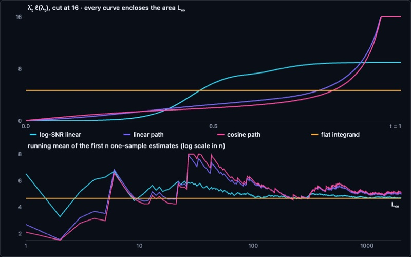
The likelihood view: ELBO, VDM and loss weighting
A diffusion model read as a deep VAE. The tutorial derives the variational bound, its continuous-time limit and why the noise schedule only changes its variance. It then writes common losses as weightings of one integrand and computes exact likelihoods with the probability-flow ODE.
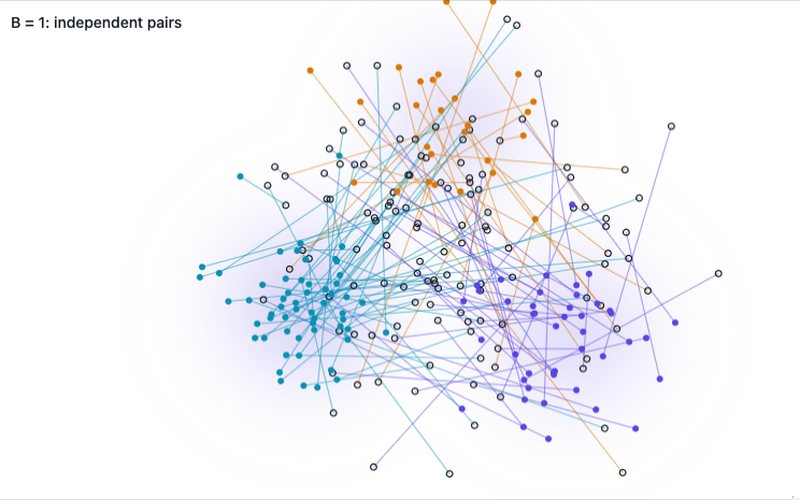
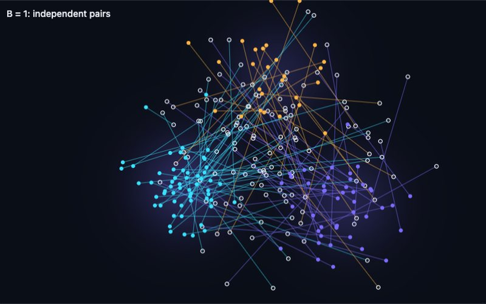
Couplings, transport and control
A diffusion model is trained on pairs of noise and data points, and the pairing can be chosen. The tutorial compares random and optimal pairings by their paths, their sampling error and their kinetic energy, then covers rectified flow and the Schrödinger bridge. It ends with reward fine-tuning as stochastic optimal control and compares the exact control with guidance and SMC.
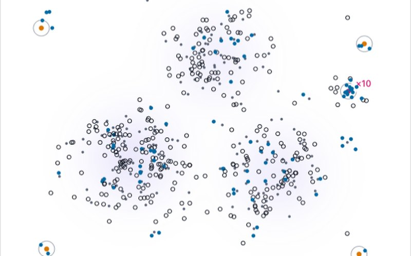
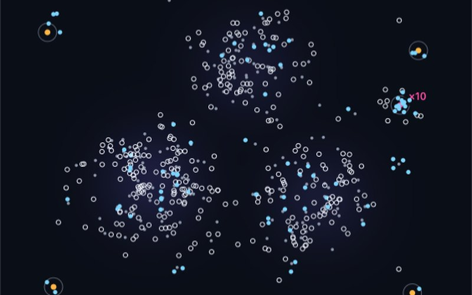
Why diffusion models generalize
The exact minimizer of the training loss only reproduces the training set. The tutorial samples from this optimum, measures when along the path it commits to a single training point, and compares two models trained on disjoint data. It then shows which points a smoothed model still copies and how a local, shift-equivariant denoiser composes new digits from patches.
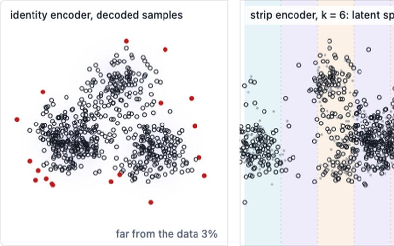
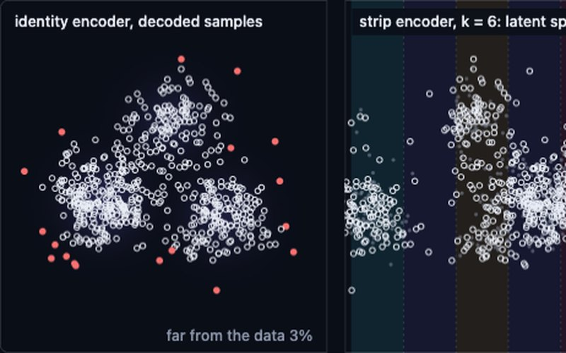
Representations and architectures
An autoencoder and a patch size decide how many tokens a model sees, and the noise schedule has to shift with the resolution. The tutorial shows a perfect autoencoder whose latent space a diffusion model still fills badly, derives the target of representation alignment, and compares which prediction target a narrow network can learn. It ends with attention as the empirical denoiser and with the cost of joint text and image attention.
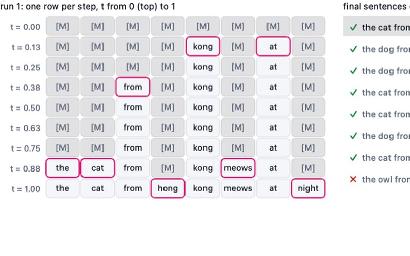
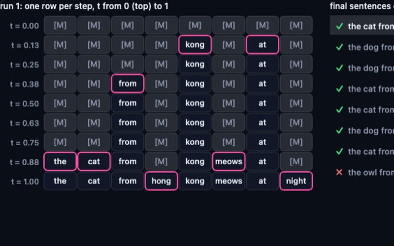
Discrete and language diffusion
Diffusion on tokens replaces the noise by a Markov chain that masks or resamples them. The tutorial computes the reverse rates of this chain exactly, shows that they need the ratio of probabilities instead of the score, and derives the masked-diffusion bound on a toy language whose likelihood is known. It ends with discrete flow matching and with the errors that come from revealing several tokens in one step.
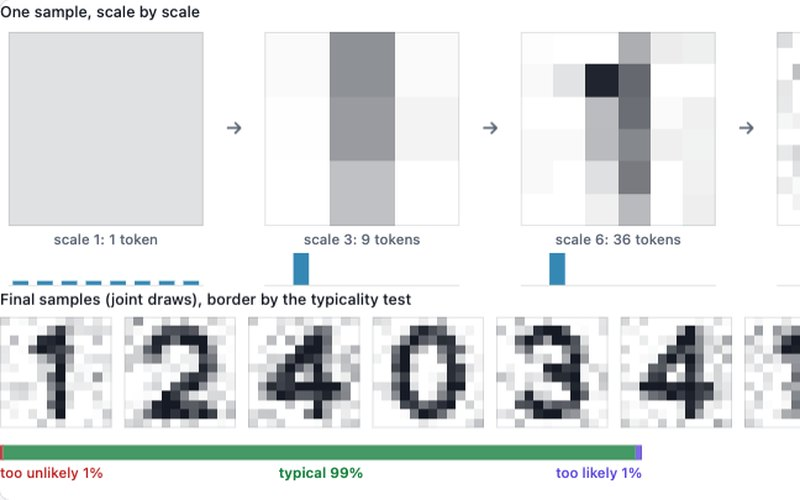
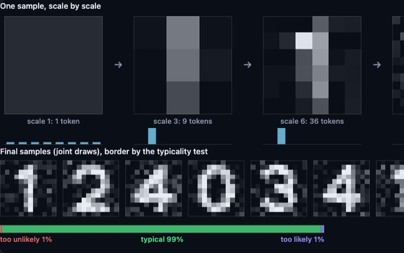
Autoregressive and hybrid visual generation
An image can be generated pixel by pixel, scale by scale or by denoising, and each choice trades sequential steps against the dependence that one step can capture. The tutorial computes every conditional of a toy image distribution exactly, shows where parallel steps produce mixed digits, and measures what a discrete codebook loses. It ends with a diffusion head for continuous tokens and with one transformer that trains on text and images together.
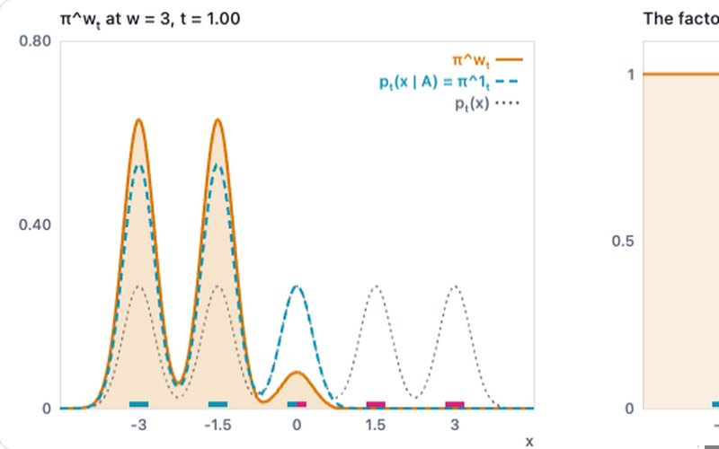
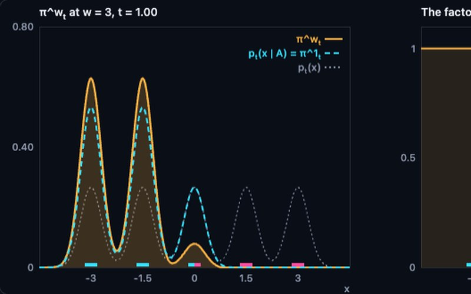
Conditioning and guidance
A conditional model can be steered by a classifier or by the difference of two of its own predictions. The tutorial computes every score and classifier of a toy mixture exactly, shows that classifier-free guidance does not sample the sharpened density it is derived from, and compares it with the exact correction. It ends with guidance intervals, autoguidance and a particle method that reaches the target.
Fine-tuning, post-training, distillation, inference-time scaling and applications
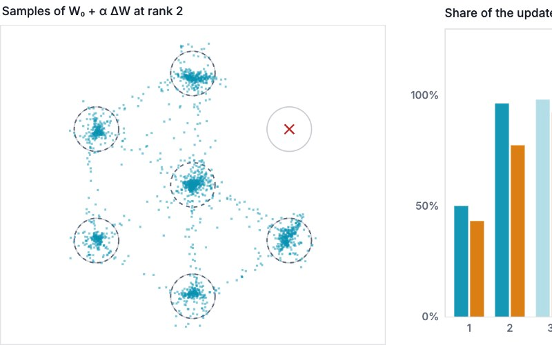
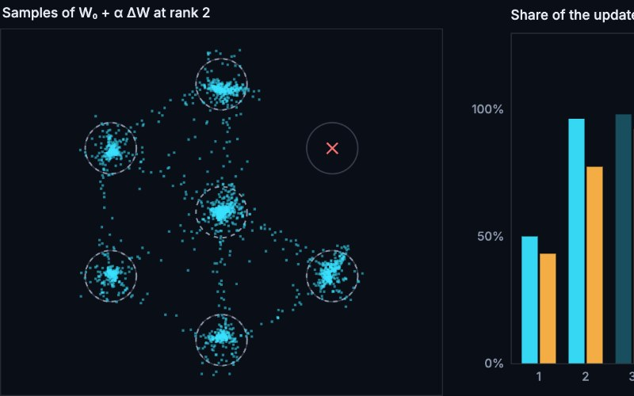
Fine-tuning and adaptation
Fine-tuning changes a pretrained model with little data and few parameters. The tutorial uses a model that is linear in its weights, so every fit is an exact least-squares solution, and shows how much of an update a low rank keeps, why DreamBooth needs its prior-preservation term, and why two adapters trained apart do not add up to a model trained on both edits.
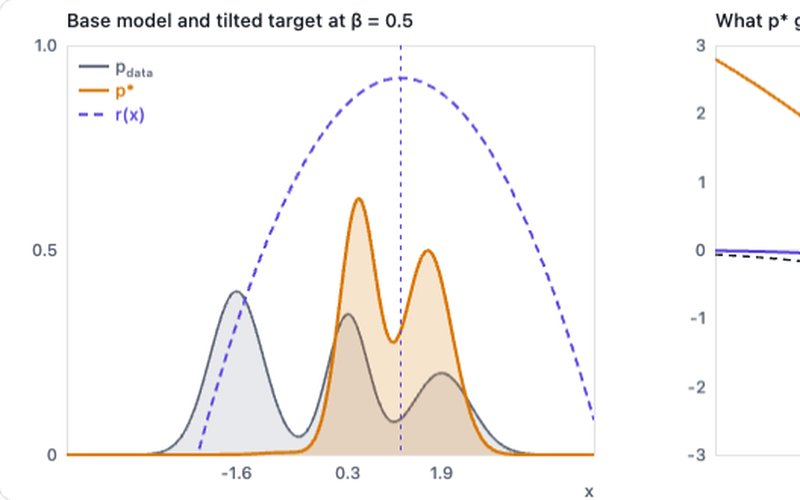
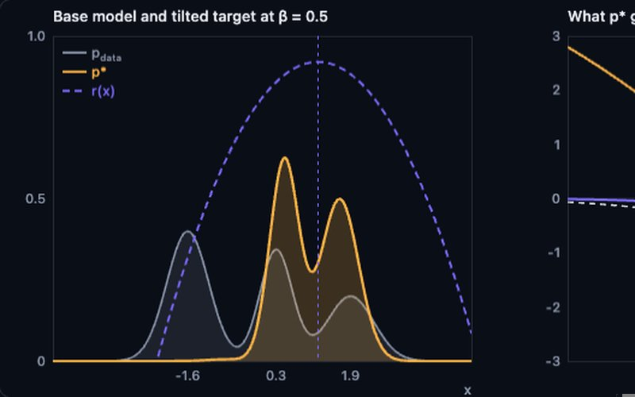
Reward fine-tuning and preference alignment
Post-training moves a model toward samples with a higher reward without losing what it already does well. The tutorial starts from the tilted density that such training should produce and trains a small model toward it in the page, with policy gradients, gradients through the sampler, preference pairs and stochastic optimal control. Every density and KL along the way is exact.
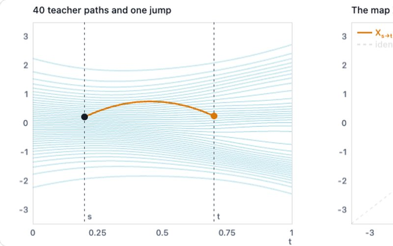
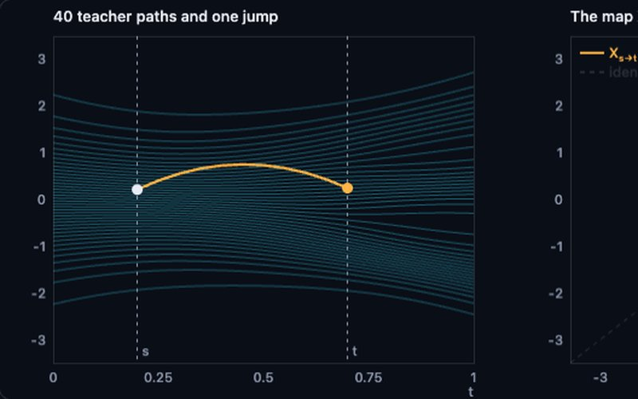
Distillation and few-step generation
A student can learn to cover the path of the sampling ODE in a few steps or in one. The tutorial defines the flow map that every student approximates, computes it exactly for a 1D mixture, and measures progressive distillation, consistency models, reflow, average velocities and distribution matching against it.
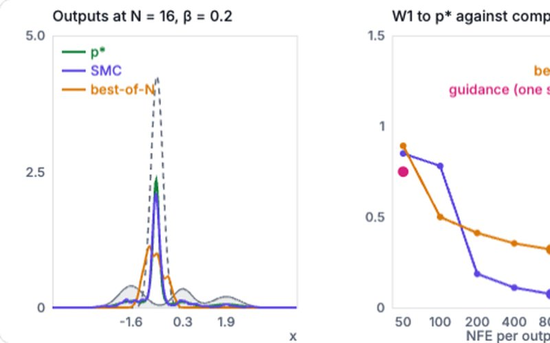
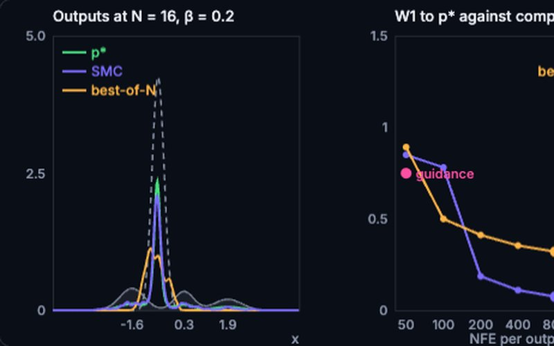
Inference-time scaling
A trained model can be improved by spending more network evaluations when it samples. The tutorial compares solvers, best-of-N, noise search, posterior sampling for an inverse problem and sequential Monte Carlo at equal compute, and ends with what happens when the reward used for selection is wrong.
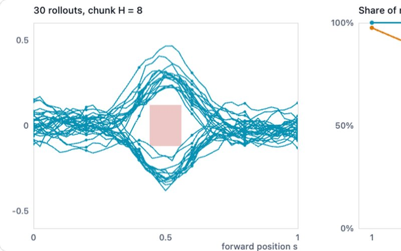
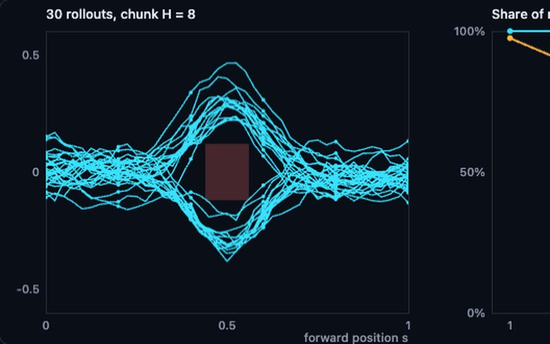
Applications
Video, world models, robot policies, molecules, proteins and weather each add a structure that the model has to respect. The tutorial isolates one design choice per application in a toy with an exact field: joint frames, rollouts on generated context, action chunks, equivariance, rigid frames on SE(3) and a proper score for ensembles.